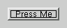
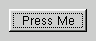

| 主页 | 所有的类 | 主要的类 | 注释的类 | 分组的类 | 函数 |
QPushButton窗口部件提供了命令按钮。 详情请见……
#include <qpushbutton.h>
继承了QButton。
推动按钮或者命令按钮或许是任何图形用户界面中最常用到的窗口部件。推动（点击）按钮来命令计算机执行一些操作，或者回答一个问题。典型的按钮有确定（OK）、应用（Apply）、撤销（Cancel）、关闭（Close）、是（Yes）、否（No）和帮助（Help）。
命令按钮是矩形的并且通常显示一个文本标签来描述它的操作。标签中有下划线的字母（在文本中它的前面被“&”标明）表明快捷键，例如：
QPushButton *pb = new QPushButton( "&Download", this );
在这个实例中加速键是Alt+D，并且文本标签将被显示为Download。
推动按钮可以显示文本标签或者像素映射，并且和一个可选的小图标。这些可以通过使用构造函数来设置并且在这之后用setText()、setPixmap()和setIconSet()来改变。如果按钮失效，文本或像素映射和图标的外观将被按照图形用户界面的风格来操作表明按钮看起来是失效的。
当推动按钮被鼠标、空格键或者键盘快捷键激活，它发射clicked()信号。连接这个信号来执行按钮的操作。推动按钮也提供不太常用的信号，例如，pressed()和released()。
菜单中的命令按钮默认情况下是自动默认按钮，也就是说当它们接受到键盘焦点时，它们将自动变为默认推动按钮。默认按钮就是一个当用户在对话框中敲击回车键或换行键时被激活的推动按钮。你可以使用setAutoDefault()来改变这一点。注意自动默认按钮会保留一小点额外区域来绘制默认按钮指示器。如果你不想要你的按钮周围的这些空间，调用setAutoDefault(FALSE)。
因为如此的重要，按钮窗口部件在过去的时代中已经发展并提供了大量的变体。Microsoft风格指南现在显示Windows推动按钮大约有10种不同状态并且文本暗示有当所有的特种组合都被考虑进去的时候，大约有几十种或更多的情况。
最重要的模式或状态有：
作为一个通用规则，当在用户点击在应用程序或者对话框窗口中点击时（比如应用、撤销、关闭和帮助）并且窗口部件被假设有一个宽的矩形形状的文本标签，应用程序或者对话框窗口要执行一个操作时，使用推动按钮。改变窗口的状态，而不是执行操作的小的、通常正方形的按钮（比如QFileDialog右上角的按钮）不是命令按钮，而是工具按钮。Qt为这些按钮提供了一个特殊类（QToolButton）。
如果你需要切换行为（请参考setToggleButton()）或者当一个按钮被像滚动条那样的箭头被按下时，按钮自动重复激活信号（请参考setAutoRepeat()），命令按钮可能不是你想要的。如果拿不准，请使用工具按钮。
命令按钮的一个变体是菜单按钮。它们提供了不仅一个命令，而是几个，因为当它们被按下时，它们弹出一个选项菜单。使用setPopup()方式来关联一个弹出菜单到一个推动按钮。
其他按钮类是选项按钮（请参考QRadioButton）和选择框（请参考QCheckBox）。
 
在Qt中，QButton基类提供了绝大多数模式和其它应用编程接口，并且QPushButton提供了图形用户界面逻辑。关于应用编程接口的更多信息请参考QButton。
也可以参考QToolButton、QRadioButton、QCheckBox、GUI Design Handbook: Push Button和基本窗口部件。
参数parent和name被发送给QWidget的构造函数。
注意你也可以传递一个QPixmap作为一个图标（感谢由C++提供的隐含类型转换）。
参数parent和name被发送给QWidget的构造函数。
返回这个按钮关联的快捷键。详细情况请参考“accel”属性。
如果这个推动是自动默认按钮，返回真，否则返回假。详细情况请参考“autoDefault”属性。
如果自动重复生效，返回真，否则返回假。详细情况请参考“autoRepeat”自动重复。
当这个按钮被激活时（也就是说当鼠标光标在按钮时，并且被先按下再释放）、当快捷键被按下时或者当animateClick()被调用时，这个信号被发射。如果你调用setDown()，这个信号不被发射。
如果你想把几个按钮连接到一个相同的槽，QButtonGroup::clicked()信号可以做同样的工作。
也可以参考pressed()、released()、toggled()、autoRepeat和down。
实例：fonts/simple-qfont-demo/viewer.cpp、listbox/listbox.cpp、network/clientserver/client/client.cpp、network/ftpclient/ftpmainwindow.cpp、 richtext/richtext.cpp、t2/main.cpp和t4/main.cpp。
如果这个按钮不是任何一个QButtonGroup的成员，这个函数返回0。
也可以参考QButtonGroup。
返回这个推动按钮的图标。详细情况请参考“iconSet”属性。
如果这个推动按钮是默认按钮，返回真，否则返回假。详细情况请参考“default”属性。
如果这个按钮被按下，返回真，否则返回假。详细情况请参考“down”属性。
如果按钮是排它的，返回真，否则返回假。详细情况请参考“exclusiveToggle”属性。
如果边缘失效，返回真，否则返回假。详细情况请参考“flat”属性。
如果这个推动按钮有一个菜单按钮在上面，返回真，否则返回假。详细情况请参考“menuButton”属性。
如果按钮被切换，返回真，否则返回假。详细情况请参考“on”属性。
如果按钮是一个切换按钮，返回真，否则返回假。详细情况请参考“toggleButton”属性。
返回这个按钮上显示的像素映射。详细情况请参考“pixmap”属性。
也可以参考setPopup()。
实例：network/httpd/httpd.cpp和popup/popup.cpp。
也可以参考pressed()、clicked()和toggled()。
设置按钮的相关快捷键。详细情况请参考“accel”属性。
设置这个推动按钮是否是自动默认按钮为autoDef。详细情况请参考“autoDefault”。
设置autoRepeat是否生效。详细情况请参考“autoRepeat”属性。
设置这个推动按钮是否是默认按钮为def。详细情况请参考“default”属性。
设置按钮是否被按下。详细情况请参考“down”属性。
设置边缘是否失效。详细情况请参考“flat”属性。
设置这个推动按钮上的图标。详细情况请参考“iconSet”属性。
设置这个推动按钮是否被切换。详细情况请参考“on”属性。
设置这个按钮上显示的像素映射。详细情况请参考“pixmap”属性。
这个弹出菜单的所有权并不被转让给这个推动按钮。
也可以参考popup()。
实例：qdir/qdir.cpp。
设置这个按钮上显示的文本。详细情况请参考“text”属性。
设置这个按钮是否是切换按钮。详细情况请参考“toggleButton”属性。
如果这个按钮被切换，返回真，否则返回假。详细情况请参考“toggleState”属性。
这也许是一个用户操作、toggle()槽激活、setState(),或者因为setOn()被调用的结果。
也可以参考clicked()。
返回这个按钮上显示的文本。详细情况请参考“text”属性。
也可以参考on、toggled()和toggleButton。
这也许是一个用户操作、toggle()槽激活或者因为setOn()被调用的结果。
也可以参考clicked()。
这个属性保存的是按钮相关的快捷键。
如果没有快捷键被设置，这个属性为0。如果你设置这个属性为0，那么任何当前的快捷键都被删除。
使用setAccel()来设置属性值并且使用accel()来得到属性值。
这个属性保存的是推动按钮是否是默认按钮。
如果这个属性为真，那么这个推动按钮在对话框中就是自动默认按钮。
当对话框接收到键盘输入焦点时，对话框中的自动默认阿牛自动变为默认推动按钮。
在一些图形用户界面风格中，默认按钮周围被绘制一个额外的框架，等于3个像素或更多。Qt会在自动默认按钮周围自动保留这些空间，也就是说，自动默认按钮也许回比它的大小提示稍大。
对于父对象为QDialog的按钮，属性默认值为真，其它为假。
使用setAutoDefault()来设置属性值并且通过autoDefault()来获得属性值。
这个属性保存的是按钮中自动面具特征是否有效。
也可以参考QWidget::autoMask。
这个属性保存的是自动重复是否生效。
如果autoRepeat生效，那么如果按钮是按下的，clicked()信号会被定期发送。这个属性对切换按钮没有效果。autoRepeat默认是关闭的。
使用setAutoRepeat()来设置这个属性值并且使用autoRepeat()来得到这个属性值。
这个属性保存的是推动按钮是否是默认按钮。
如果这个属性被设置为真，那么如果用户在对话框中敲击回车键，这个推动按钮将被按下。
当用户按下回车键，当前默认按钮得到点击，而与当前对话框中那个窗口部件拥有键盘输入焦点无关。同一时刻只能有一个推动按钮被设置为默认按钮。这个按钮然后被显示有一个额外的框架（这依赖于图形用户界面风格）。
只有在对话框中，默认按钮行为才被提供。通常当按钮得到焦点，换行键或者空格键被按下时，按钮被点击。
这个属性默认值为假。
通过setDefault()可以设置属性值并且通过isDefault()来获得属性值。
这个属性保存的是边缘是否有效。
这个属性默认值为假。
通过setFlat()可以设置属性值并且通过isFlat()来获得属性值。
这个属性保存的是推动按钮上的图标。
如果这个推动按钮没有图标，这个属性将返回0。
通过setIconSet()可以设置属性并且通过iconSet()来获得属性值。
这个属性保存的是推动按钮上是否有一个菜单按钮。
这个函数是废弃的。它的提供只是为了保证旧代码能够工作。我们强烈建议在新代码中不要使用它。
如果这个属性被设置为真，那么在推动按钮上会绘制一个向下的箭头来表明如果用户在箭头上点击将会弹出一个菜单。
通过isMenuButton()来得到属性值。
这个属性保存的是按钮是否被切换。
这个属性只有对于切换按钮才能被设置。
也可以参考on、toggle()、toggled()和toggleButton。
使用isOn()来得到这个属性值。
这个属性保存的是按钮上显示的像素映射。
如果这个像素映射是单色的（也就是，它是一个QBitmap或者它的色深为1）并且它没有一个面具，这个属性将被设置为它自己的面具。这样的目的是为了绘制透明位图，例如，这对于切换按钮是很重要的。
如果没有像素映射被设置，pixmap()返回0。
通过setPixmap()可以设置属性值并且通过pixmap()来得到属性值。
这个属性保存的是按钮上显示的文本。
如果按钮没有文本，这个属性将返回一个零字符串。如果文本中有一个“&”在里面，那么会使用“&”后面紧接着的字符自动创建快捷键。
这里没有默认文不能。
通过setText()可以设置属性值并且通过text()来获得属性值。
这个属性值保存的是按钮是不是切换按钮。
切换按钮和选择框类似有开/关状态。一个推动按钮初始化时不是切换按钮。
也可以参考on、toggle()、toggleButton和toggled()。
通过setToggleButton()可以设置属性值。
这个文件是Qt工具包一部分。 版权所有 © 1995-2002 Trolltech。保留所有权利。
| Copyright © 2002 Trolltech | Trademarks | 译者:Cavendish | Qt 3.0.5版
|